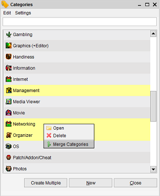

Merging Property Items
Menu Path > Administration > Maintain > Edit > Merge Items
From within the administration menu you can merge properties.
If you have, for example, multiple categories in use (assigned to items) but they actually have the
same meaning you can choose to merge these into one other existing property. All the references to
this property will be updated and the old properties (the ones which were merged) will be removed.
Open the Administration Menu and select the appropriate Maintain option. Select the items you want to
have merged into another property (CTRL click to select multiple items):

Choose Edit and select the merge utility (or right-click in the view and select the merge option from
there). Now, a very simple dialog has opened. The only thing you need to do here is to choose the target
property. This is the property to which the previously selected properties will be merged.

Press Apply and the process will be started. You can follow the actions in the log windows in the lower
part of the screen.